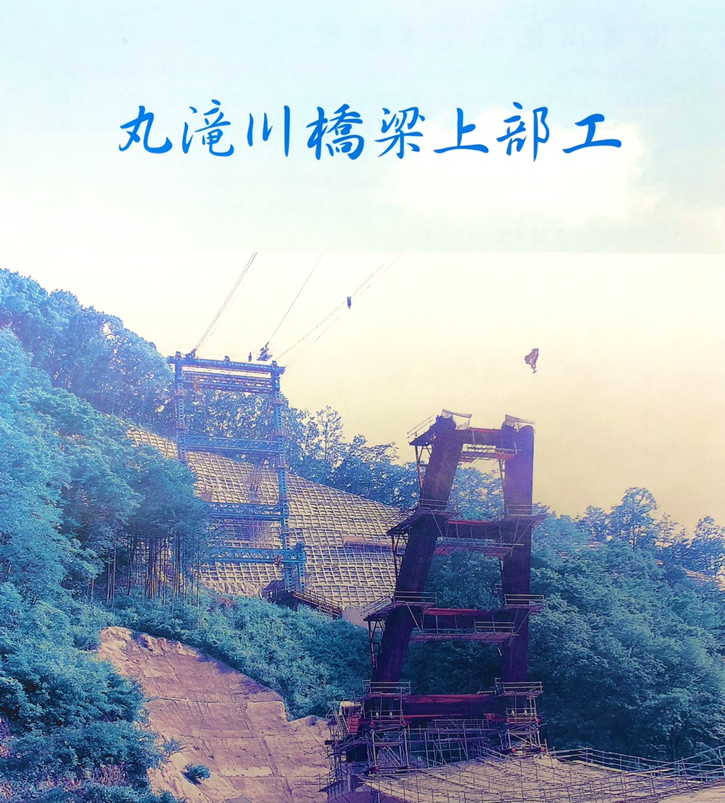
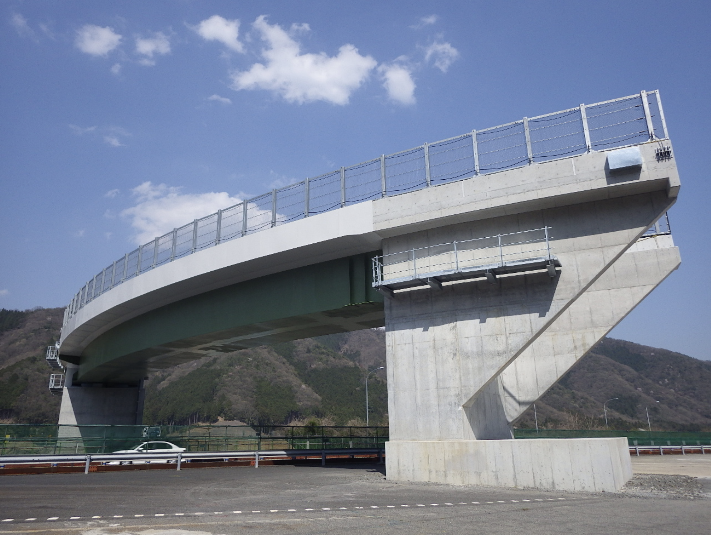

-
主要地方道伏見柳谷高槻線
-
城陽第二高架橋
-
 丸滝川橋梁
丸滝川橋梁 -
 丸滝川橋梁
丸滝川橋梁 -
丸滝川橋梁
-
丸滝川橋梁
-
丸滝川橋梁
-
丸滝川橋梁
-
丸滝川橋梁
-
丸滝川橋梁
-
丸滝川橋梁
-

丸滝川橋梁
-
大和大橋
-
大和大橋
-

中国横断自動車道 山崎JCT
-
 高槻東道路 五領高架橋
高槻東道路 五領高架橋 -
船坂川
-
 城陽第二高架橋
城陽第二高架橋 -
城陽第三高架橋
-
 阿倍野歩道橋
阿倍野歩道橋
主要地方道伏見柳谷高槻線
新設
- 大和大橋ケーブル架設工事
- 三田2号線ケーブル架設工事
- 丸滝川ケーブル架設工事
- 大阪モノレール架設工事
- JR京都第2外環BO架設工事
- 久御山新珠城北高架橋上部工事
- 森第二高架橋上部工事
- 久御山ランプ架設工事
- 横大路高架橋上部工事
- 一宮高架橋上部工事
- 三ケ日ジャンクション架設工事
- 宝塚・大西ループ橋架橋工事
- 有松高架橋工事
- 滋賀・思川橋架設工事
- 寺川南架設工事
- 愛知・日比野工区鋼折架設工事
- 新日野橋高架橋架設工事
- 門真高架橋西(鋼上部工)工事
- 湾岸道路根岸架設工事
- 長岡京第4工事
- 橋本道路橋架設工事
- 阿倍野歩道橋架設工事
- 阪神高速道路松原ジャンクション架設工事
- 境寺BO高架橋工事
- 国道371号(仮称小原田高架橋上部その1)道路改築工事
- 県道橋本道路橋本地区側道橋上部工事
- 鳥取西道路本高第2高架橋架設工事
- 鳥取西道路塩見川橋架設工事
- 新名神高速道路 坊川第一橋他１橋（鋼上部工）工事
- おおさか東線神崎川橋りょう外新設他工事
- 加古川中央JCT本線橋他鋼上部工事
- 国道25号五月橋ICBランプ橋上部工事
- 町道平中と折号線（仮称・新龍光寺橋）橋梁架設工事
- 中国横断自動車道 山崎ジャンクションBランプ橋他1橋（鋼上部工）工事
- 主要地方道伏見柳谷高槻線 高槻東道路仮称五領高架橋（JR跨線部）上部工事
- 新名神高速道路 城陽第三高架橋（下り線）他２橋（鋼上部工）工事
- 西船場JCT
- 鴫野都計第一架道橋
- 淡路駅周辺連続立体交差
- 姉川橋架設工事
- 下孝子第一橋架設工事
- 西久世橋高架橋架設工事
- 木津川御幸橋架設工事
- 新北橋架設工事
- 船坂川橋架設工事
- 余野川橋架設工事
補修
- 近鉄布施補修工事
- JR佐和山跨線橋補修工事
- JR第2御堂筋架道橋落橋防止対策工事
- JR上淀川橋梁落橋防止対策工事
- JR日根野跨線橋耐震補強工事
- JR鳥飼保線所管内土木構造物大規模改修その他工事
- 8-1-堺支沓取替工事
- 鶴野高架橋支沓取替工事
- 10-2-大桁裏面抜設置工事
- 古江橋補修工事
- 国道170号線補修工事
- 巨摩跨道橋耐震補強工事
- 新御堂筋耐震工事
- 神田橋高架橋補修工事
- 11-5-東大管補修工事
- 11-7-神床組及び横桁工事
- 11-9-池耐震補強工事
- 13-3堺－西-大管上部耐震改善工事
- 14-2-湾上部耐震改善工事
- 成願寺橋梁補修工事
- 新鳥飼大橋橋梁補修工事
- 港大橋橋脚補強工事
- 大宮橋補修工事
- 関西国際空港連絡橋補強工事
- 彦根・佐和山跨線橋補強工事
- 紀州大橋耐震補強工事
- 新在家架道橋落橋防止対策工事
- 阪神高速道路法円坂補修工事
- 鋼床版等大規模修繕工事
- 阪神高速守口線都島工区補修桁補強工事
- 堂島大橋改良工事
- 木津川橋他３橋補修工事
| 新設 | 補修 |
|---|---|
| 大和大橋ケーブル架設工事 | 近鉄布施補修工事 |
| 三田2号線ケーブル架設工事 | JR佐和山跨線橋補修工事 |
| 丸滝川ケーブル架設工事 | JR第2御堂筋架道橋落橋防止対策工事 |
| 大阪モノレール架設工事 | JR上淀川橋梁落橋防止対策工事 |
| JR京都第2外環BO架設工事 | JR日根野跨線橋耐震補強工事 |
| 久御山新珠城北高架橋上部工事 | JR鳥飼保線所管内土木構造物大規模改修その他工事 |
| 森第二高架橋上部工事 | 8-1-堺支沓取替工事 |
| 久御山ランプ架設工事 | 鶴野高架橋支沓取替工事 |
| 横大路高架橋上部工事 | 10-2-大桁裏面抜設置工事 |
| 一宮高架橋上部工事 | 古江橋補修工事 |
| 三ケ日ジャンクション架設工事 | 国道170号線補修工事 |
| 宝塚・大西ループ橋架橋工事 | 巨摩跨道橋耐震補強工事 |
| 有松高架橋工事 | 新御堂筋耐震工事 |
| 滋賀・思川橋架設工事 | 神田橋高架橋補修工事 |
| 寺川南架設工事 | 11-5-東大管補修工事 |
| 愛知・日比野工区鋼折架設工事 | 11-7-神床組及び横桁工事 |
| 新日野橋高架橋架設工事 | 11-9-池耐震補強工事 |
| 門真高架橋西(鋼上部工)工事 | 13-3堺－西-大管上部耐震改善工事 |
| 湾岸道路根岸架設工事 | 14-2-湾上部耐震改善工事 |
| 長岡京第4工事 | 成願寺橋梁補修工事 |
| 橋本道路橋架設工事 | 新鳥飼大橋橋梁補修工事 |
| 阿倍野歩道橋架設工事 | 港大橋橋脚補強工事 |
| 阪神高速道路松原ジャンクション架設工事 | 大宮橋補修工事 |
| 境寺BO高架橋工事 | 関西国際空港連絡橋補強工事 |
| 国道371号(仮称小原田高架橋上部その1)道路改築工事 | 彦根・佐和山跨線橋補強工事 |
| 県道橋本道路橋本地区側道橋上部工事 | 紀州大橋耐震補強工事 |
| 鳥取西道路本高第2高架橋架設工事 | 新在家架道橋落橋防止対策工事 |
| 鳥取西道路塩見川橋架設工事 | 阪神高速道路法円坂補修工事 |
| 新名神高速道路 坊川第一橋他１橋（鋼上部工）工事 | 鋼床版等大規模修繕工事 |
| おおさか東線神崎川橋りょう外新設他工事 | 阪神高速守口線都島工区補修桁補強工事 |
| 加古川中央JCT本線橋他鋼上部工事 | 堂島大橋改良工事 |
| 国道25号五月橋ICBランプ橋上部工事 | 木津川橋他３橋補修工事 |
| 町道平中と折号線（仮称・新龍光寺橋）橋梁架設工事 | |
| 中国横断自動車道 山崎ジャンクションBランプ橋他1橋（鋼上部工）工事 | |
| 主要地方道伏見柳谷高槻線 高槻東道路仮称五領高架橋（JR跨線部）上部工事 | |
| 新名神高速道路 城陽第三高架橋（下り線）他２橋（鋼上部工）工事 | |
| 西船場JCT | |
| 鴫野都計第一架道橋 | |
| 淡路駅周辺連続立体交差 | |
| 姉川橋架設工事 | |
| 下孝子第一橋架設工事 | |
| 西久世橋高架橋架設工事 | |
| 木津川御幸橋架設工事 | |
| 新北橋架設工事 | |
| 船坂川橋架設工事 | |
| 余野川橋架設工事 |